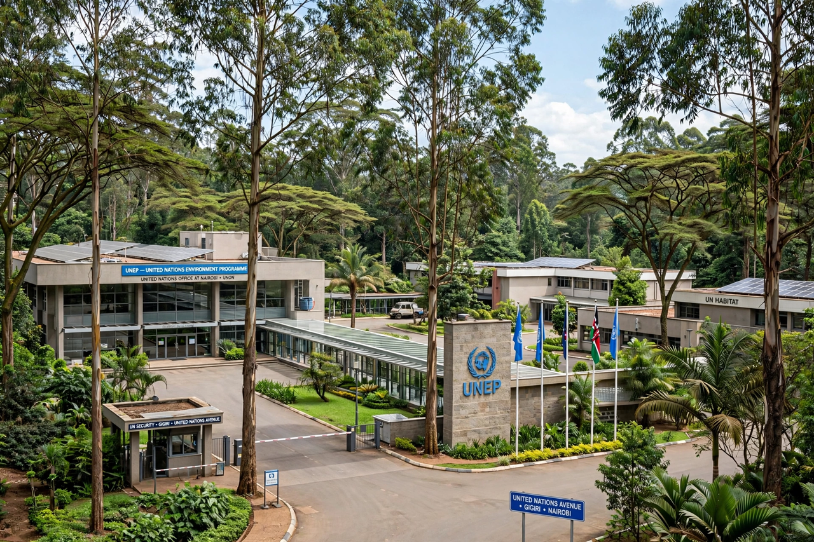

United Nations Environment Programme

The United Nations Environment Programme (UNEP) is the United Nations' leading environmental authority. It was established in 1972 following the Stockholm Conference on the Human Environment, and its headquarters are in Nairobi, Kenya — the first UN programme headquartered in a developing country.
UNEP sets the global environmental agenda, produces authoritative assessments of the planet's state, and hosts the secretariats of many environmental treaties.
Work
UNEP's flagship assessments include the Global Environment Outlook reports and the annual Emissions Gap Report, which compares countries' climate pledges with the cuts needed (see {L('Climate_mitigation')}). It supports the conventions on biodiversity, desertification, mercury (Minamata), and the ozone regime, and campaigns on issues from air quality to plastic pollution.
The programme's first executive director was Maurice Strong, organiser of both the 1972 Stockholm conference and the 1992 {L('Earth_Summit')}; later heads included Achim Steiner and, from 2019, Inger Andersen of Denmark.
Role and limits
UNEP is a programme rather than a specialised agency, with a comparatively small budget drawn largely from voluntary contributions — a perennial constraint debated since its founding, with periodic proposals to upgrade it into a full world environment organisation. The UN Environment Assembly, created in 2012 with universal membership, is its governing body and the world's highest-level decision forum on the environment. See Environmental protection.
See also: Environmental protection · Earth Summit · United Nations · Climate change · Biodiversity